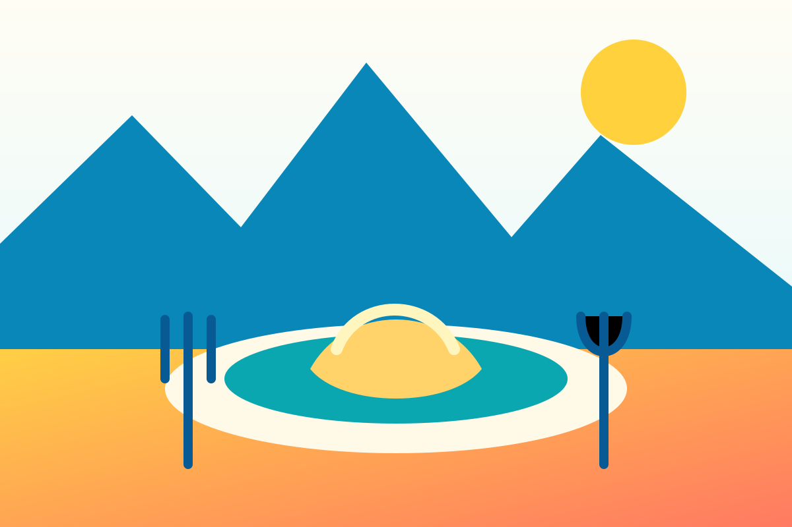

Bonnes adresses
Restaurants
sur les deux versants.
Une sélection éditoriale indépendante entre La Giettaz, le col des Aravis et La Clusaz. Horaires et menus sont à vérifier auprès des établissements.

Chargement des adresses…
Transparence : les établissements sont cités pour leur intérêt éditorial. Un éventuel partenariat devra être signalé clairement sur la fiche concernée.